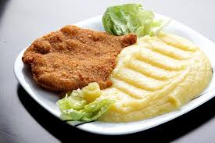

Argentinan Milanesa
It consists of thin beef cutlets that are breaded and fried to golden perfection.
Commonly served with mashed potatoes, fries, or in a sandwich (“milanesa al pan”), it’s a comforting and easy dish, perfect for lunch or dinner.

Ingredients and Tools:
Ingredients:
For the milanesa:
- 4 thin beef cutlets (sirloin, round, or top round)
- 2 eggs
- 2 tablespoons milk (optional)
- 1 cup breadcrumbs
- 1/2 cup grated Permesan (optional)
- 2 garlic cloves, minced
- 1 tablespoon chopped parsley
- Salt and pepper to taste
- Vegetable oil for frying
- Lemon wedges (optional)
For mashed potatoes:
- 4 large potatoes
- 2 tablespoons butter
- 1/2 cup milk (or to taste)
- Salt and pepper to taste
For fries:
- 4 large potatoes
- Vegetable oil for deep fruing
- Salt
Utensils:
- 2 shallow bowls
- Frying pan
- Large pot
- Potato masher or fork
- Peeler and knife
- Cutting board
- Tongs or slotted spoon
- Paper towels
- Bowls and serving plates
Steps:
For the milanesa:
- Pound the beef cutlets (if needed) to make them thin and even
- Season both sides with salt and pepper
Make the egg mixture:
- In a shallow bowl, beat the eggs with milk (optional), minced garlic, chopped parsley, and a pinch of salt
Prepare the breadcrumb:
- In another shallow bowl, mix breadcrumbs with Parmesan cheese (optional)
Bread the cutlets:
- Dip each beef cutlet into the egg mixture
- Then coat it thoroughly in the breadcrumb mixture, pressing firmly so the crumbs stick well
Fry:
- Heat vegetable oil in a large frying pan over medium-high heat
- Fry each cutlet for about 2-3 minutes per side until golden brown and crispy
- Place on paper towels to absorb excess oil
Serve:
- Serve hot with lemon wedges, mashed potatoes, salad, or fries